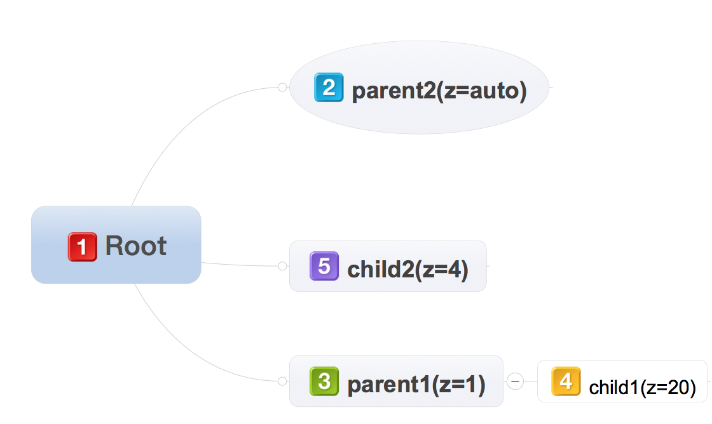
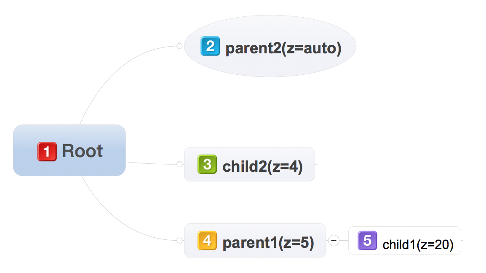

父亲1，z-index=1
孩子1，z-index=20
父亲2，z-index=auto(无)
孩子2,z-index=4
在每个堆叠上下文中，下列层按从后向前的顺序绘制：
- 元素的background和border生成的堆叠上下文
- 堆叠层级为负数的子级堆叠上下文（最负的优先）
- 流内的，非内联级，未定位的（non-positioned ）后代
- 未定位的浮动（元素）
- 流内的，内联级，未定位的后代，包括inline table和inline block
- 堆叠层级为0的子级堆叠上下文，以及堆叠层级为0的定位的后代
- 堆叠层级为正数的子级堆叠上下文（最小的优先）
下面是默认情况下的堆叠上下文 (优先级代表的绘制顺序,先绘制的，会被后绘制的覆盖）
如果修改父亲1的z-index = 5,则堆叠上下文改为: (优先级代表的绘制顺序,先绘制的，会被后绘制的覆盖）
